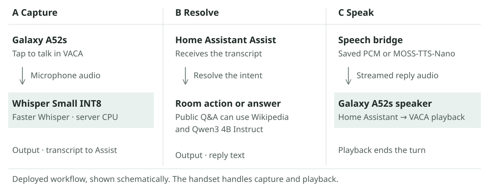

A Galaxy A52s runs the display and streams spoken replies. A Home Assistant server transcribes requests with Whisper Small INT8 and handles room commands. MOSS-TTS-Nano synthesizes replies on the phone or server.
Replay a voice turn
Scripted audio and device states. No microphone required.
Bedside consoleReady
Demo stateRoom lights at full brightness
Turn trace
Request
“Night light.”
Reply
“Starting night light.”
CaptureGalaxy A52s · VACA
TranscribeWhisper Small INT8 · server CPU
ResolveHome Assistant runs the Night Light routine
SpeakPlay the saved MOSS-TTS-Nano confirmation
Audio rendered with built-in MOSS-TTS-Nano voices. The fallback toggle changes the illustrated route and plays the same recording.
From a spoken request to a reply

VACA captures microphone audio after a tap on the Galaxy A52s. The server runs Faster Whisper with Whisper Small INT8, then passes the transcript to Home Assistant Assist. Assist resolves a room command or an answer. Public knowledge questions can add a Wikipedia lookup and local Qwen3 4B Instruct generation.
The handset captures, synthesizes on the phone route, and plays replies. The server speech bridge routes saved PCM, phone INT8 synthesis, or server FP32 synthesis, then sends the result through Home Assistant to VACA.
Model stack
Speech recognition
Whisper Small INT8
Faster Whisper on the home server CPU transcribes English audio and sends text to Home Assistant through Wyoming.
MOSS-TTS-Nano 100M + MOSS Audio Tokenizer Nano 20M
ONNX Runtime generates audio on the phone CPU with INT8 dense layers and an FP32 codec. The server has an FP32 fallback. The phone decodes the first frame alone, then batches two frames at a time.
The deployed voice-source setting offers Phone and Server. On the Phone route, a saved PCM hit goes directly to playback. Fresh replies of up to 75 SentencePiece tokens use MOSS-TTS-Nano 100M with INT8 dense layers on Android. Its FP32 MOSS Audio Tokenizer Nano 20M codec decodes the first frame alone, then two frames at a time. Server selection or a longer reply uses the server's FP32 model.
The server resamples the PCM, applies pitch-preserving tempo and short-pause processing, and buffers the reply for playback. If the phone route fails before delivering answer PCM, the server can use its FP32 MOSS model even after a thinking cue has played. A failure after answer PCM starts ends the reply without replaying it.
Project engineering
OpenMOSS supplies the speech model and codec. Faster Whisper supplies recognition, and Home Assistant supplies intent resolution. The project adds the Android speech service, INT8 conversion, incremental codec scheduling, saved PCM bank, phone/server routing, and streaming audio preparation.
The repository includes a runnable CPU speech stack, the Android synthesis source, INT8 conversion, a completed-reply cache and fallback tests. Public model presets make the reference build independent of the household's voice recordings.
Build your own
Start with Docker Compose on Linux. Generate a MOSS reply and transcribe it with Whisper before connecting a microphone or a device. Then connect Home Assistant's native intent pipeline and try the included virtual bedside light.
An optional Android build moves synthesis to the phone. The reference uses the public Ava preset and native playback pace. The deployed setup shown in the figures also has a pre-generated phrase bank, tempo and pause processing, and optional knowledge answers.
Across 24 warm INT8 replies, first PCM arrived in 279–360 ms, median 288 ms. The first signal-bearing PCM chunk arrived in 279–416 ms, median 288 ms. First PCM can contain silence.
Native real-time factor was 0.838–1.004×, median 0.942×. It divides generation time by native audio duration, before the server's 1.10× tempo, pause processing, and protective tail. Recorded chunk arrivals at the faster playback pace needed up to 169 ms extra startup buffer.
November 3, 2026. Three threads, CPU spinning, two-frame codec batches after the first frame. Signal detection uses a normalized sample-amplitude threshold of 0.005. Capture, network transit, and speaker onset are outside this component test. Measurement summary
Voice pipeline
1.22 s median and 7.30 s at the 90th percentile from end of capture to first outgoing audio, across 120 turns with audio.
The sample mixes normal use and replays. Some turns start with a thinking cue. Timing ends before the phone plays the sound.